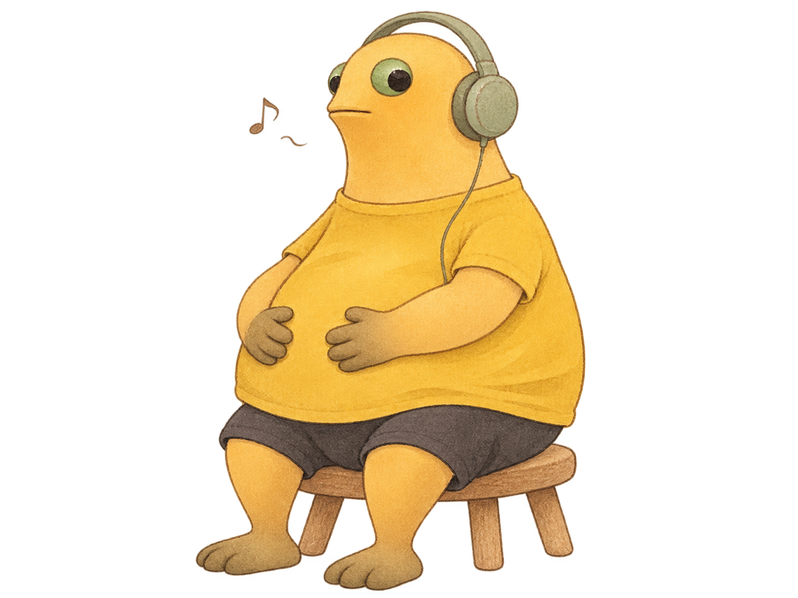

CHORD PRACTICE / 01
隨機和弦練習器
今天，來練點不一樣的。
幾個和弦，一點新的可能。
自由組合和弦進行，或跟著節拍，把每一次轉換練得更自在。

練習設定
SET UP這次，試試這樣彈
YOUR PROGRESSION和弦準備好，就開始吧。
倒數計時
尚未開始
倒數功能目前未啟用
從你提供的和弦中不重複抽選，再打亂順序。換一組進行，聽聽不同的可能。
練習設定
SET UP30–240 BPM
進階設定漸進加速 · 關閉
不低於起始速度，最高 240。
從下一拍套用加速，到達最高速度後維持。
JUST PLAY.
目前和弦
—尚未開始
— BPM
已練習 0:00
每四拍，一個新的和弦。準備好就開始。